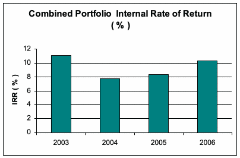
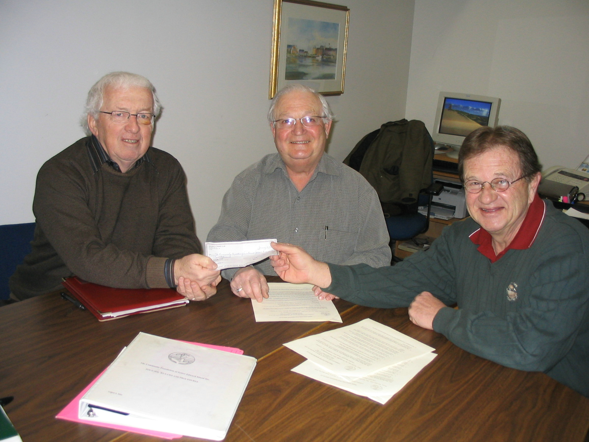
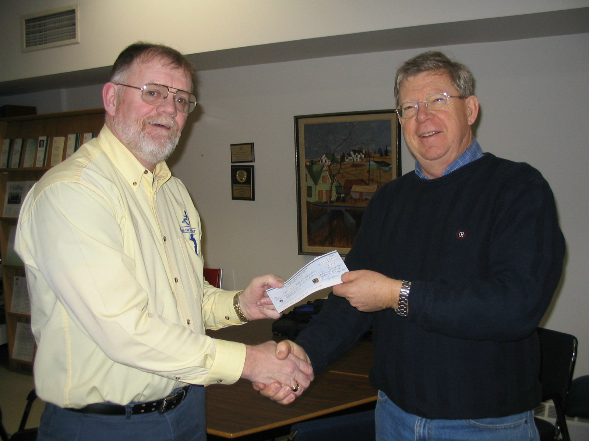
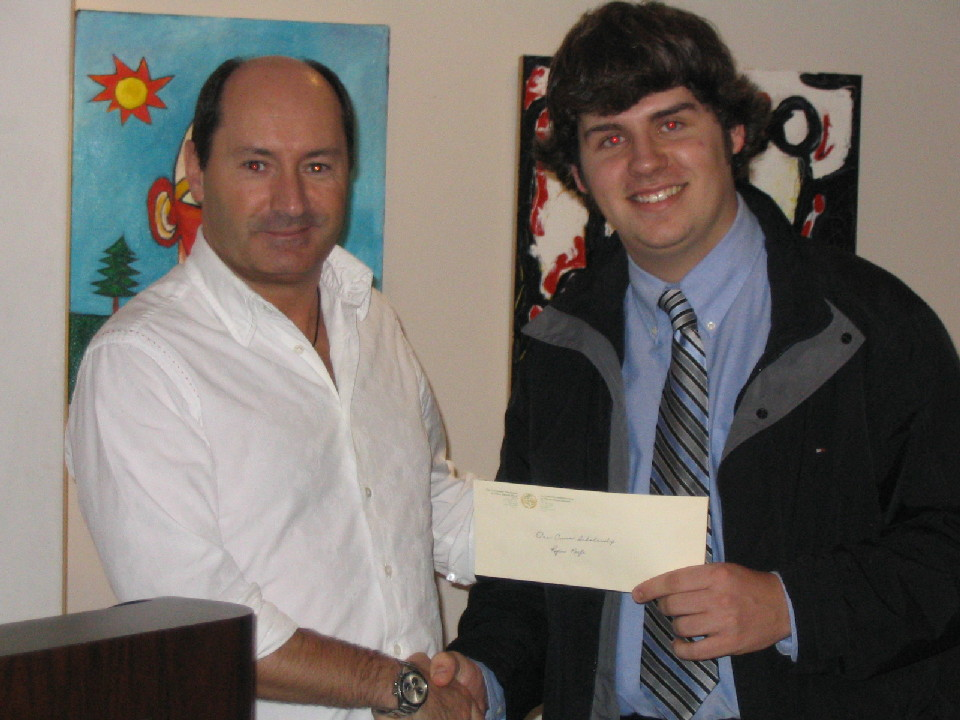
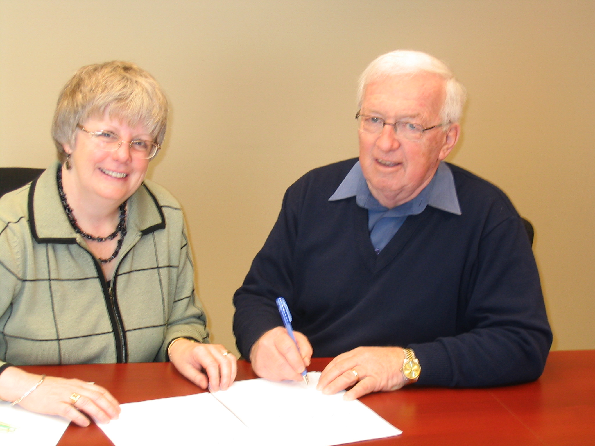
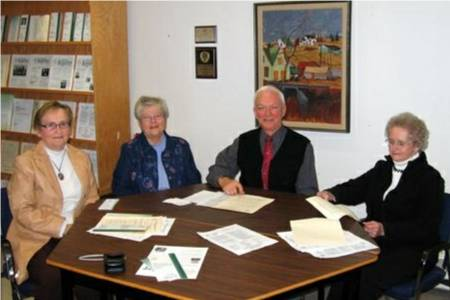

Reporter
Vol: 6 No. 1 June 2007
The Newsletter of the Community Foundation of Prince Edward Island
President’s Message

New message needed
I would like to note especially, the personal and financial support of Directors; first awards from The Dr. Donald K. Taylor Fund and The PEI Association of Architects Scholarship Funds; the increase in donations to Island arts and cultural organizations from US citizens, a positive mid-term review of the Arts & Heritage Stabilization Program; a return of 8.3% for our funds under management, and the establishment of 2 new funds.
During the past three years our funds under administration have grown from $381,299.26 at the end of 2002 to $626,376.02 on December 31, 2005. During the same period, our return on investment has been 11.05%, 7.7% and 8.3% respectively.
Thanks for your special efforts.
Norman Carruthers, President
Featured Fund
The Community Foundation Of Prince Edward Island is a well-kept secret. The secret includes 35 separate funds, endowments worth $1 million, grants of nearly $40 thousand per year, the lowest operating costs, dedicated Directors and volunteers, an annual reception for our American friends, events for Summer Islanders and many more – and we do it on an operating budget of under $20,000 per year.
We are willing to share the secret but we need your help in spreading the word. Tell your friends about us, pass along our Community Reporter, forward our electronic newsletter, check our website or talk to us about establishing a fund.
For even more tangible help, simply send you’re a contribution through the Canada Helps option on our website (www.cfpei.ca) or mail to CFPEI at the address given elsewhere in this newsletter. Editor
Our Newest Endowments
Summer Islanders Legacy Fund in support of causes that reflect the interests of summer Islanders.
Upson Fund established by Tim and Kathy Upson with grants available for any charitable cause.
Cumberland Rocky Point WI Fund for the advancement of literacy at the elementary schools in the area.
T. Arthur Dawson Masonic Fund, established by the late T. Arthur Dawson for scholarships for sons and daughters of a Mason living in the Crapaud and Summerside area.
Living Memorial Trust, established with generous support by the family of Charles Keuper, to encourage the maintenance of green spaces
Beach Tennis Club Fund honours two of its Founders, Gordon and Helen MacDonald, and results from the sale of land in the Stanhope area. Grants from the Beach Tennis Club Endowment will be made annually to Sport PEI to provide a prize to the top junior male and female tennis
players.
ALS Society of Prince Edward Island to provide for future needs of the Society.
Island Shrine Club Fund for the support of shrine projects throughout the Island
Treasurer’s Corner
Number of Funds: 35
FM Value of Portfolio
2003 $453,384
2004 $583,369
2005 $626,376
2006 $866,866
2007/05/25 $971,743

Grants Since last issue
The PEI Rape/Sexual Assault Crisis Centre from undesignated funds to upgrade a policy and procedures manual.
Girl Guides of Canada - PEI Council from undesignated funds for improving governance.
PEI Canadian Parents for French from undesignated funds for improving organizational governance.
SAVE PEI: Students Against Violence Everywhere (Montague Chapter) from undesignated funds to produce and air radio spots on relationship violence.
Learning Disabilities Association of PEI from undesignated funds in support of a governance workshop.
PEI Division of the Canadian Red Cross from undesignated funds to conduct a seniors
survey.
7 Belfast Consolidated School from the Hesta MacDonald Legacy Fund for the purchase
of library books.
Miramichi Rural School from The Glendenning Fund for the purchase of library books.
Souris High School, from the Souris Community Fund, for the purchase of band instruments
Scholarships
Rae-Anne McCourt of Summerside was awarded the Summerside Natick Hockey
Scholarship to attend St Thomas University
Ryan Keefe of Summerside received the Orin Carver Scholarship to attend UPEI
Jessica Hutchinson of Bonshaw received the Joan Auld Scholarship to attend the
Kootenay School of the Arts
Christopher Dahn of Cornwall received a Joan Auld Scholarship to attend the Nova
Scotia College of Art and Design
Andrea Gallant of Alberton received the Lowell Phillips Scholarship to attend UPEI
Carolyn Doucette of Kensington received the Lorne and Ruby Bonnell Scholarship
to attend Dalhousie University
In Memoriam
Remembering Family and Friends
In Memory Of ~
Lewis MacMillan,
Debbie MacMillan,
Eric Murray,
Olive and Jack Bigelow,
Edith Robinson,
Blair Ramsay,
Lorne Acorn,
Anne McQuaid,
Mary C. McQuaid,
Joyce Pert,
Ross and Leila Nicholson
CFPEI Team
Executive
Norman Carruthers, President
John Robinson, Past President
John Ives, Vice President
Bruce Lewis, Secretary
Treasurer, David Campbell
Directors
Margaret Ching
Heather MacDonald
Myron MacKay
Anne Nicholson
David Anderson
Tom Davies
Joyce Gaudet
Office Administrator
Marla MacDonald
Volunteers
Deborah Lavers
Lois MacMillan
James Travers
Gerry Johnston
Ron Smith
Greg Peters
Advisors:
Investment Managers: Phillips, Hager & North
Solicitors: James Travers, Stewart McKelvey Stirling Scales
Auditors: David Arsenault, ArsenaultBestCameronEllis
Marketing: The Sharp Group
Brochures: Anne Patterson-Kearns
Website: Ricky Dalton
Editor: Don Glendenning
Donors and Sponsors
ADL
Atlantic Lottery Corporation
Joan Auld & Keith Pigot
Professor Roger D. H. Black
The Samuel and Saidye Bronfman Family Foundation
Rick Burger
Robert W. Butt
Ronald G. Butt
Andrew Campbell
David & Dianne Campbell
Mary P. Campbell
Stephen Campbell
Thane Campbell
Gordon Carr
Norman & Diana Carruthers
Roy & Aletha Creed
Margaret Ching
Fast Foods (P.E.I.) Ltd.
Don & Carol Glendenning
Janet E. Glendenning
Ken Glendenning
Dr. Tom Hall
Suzanne Hasting-James
John Ives
Dr. Ralph & Gail Kennedy
Virginia Kinsman
Dr. Arthur Law Knight
Errol Laughlin
Bruce & Kay Lewis
D. R. Livingstone
Heather Henry MacDonald
Hesta MacDonald
Marla MacDonald
Alma MacLennan
Lois MacMillan
MacPherson Roche Smith & Noonan
Bernice McGee
Jim & JoAnn McQuaid
Lloyd & Hazel Millar
Douglas Moore Ltd.
Anne Nicholson
Noye Enterprises Inc.
Tom O=Leary
PEI Mutual Insurance Company
The Pepsi Bottling Group
Henry Purdy
RBC Foundation
RBC Royal Bank
John & Hazel Robinson
Royalty Oaks Ltd.
Scotiabank - Commercial Banking
Dr. J.P. & Katherine Schaefer
Strait Crossing Bridge Limited
Funds
Agricultural Fund |
ALS Society of PEI |
Architects Association |
Auld Fund |
Beach Tennis Club |
Bonnell Fund |
C. Gorden Lord Fund |
Carver Fund |
Community Fund |
Cumberland - Rocky Point WI |
Eric C. Robinson |
Foundation |
Fund #1 |
Ghiz/Bryenton Fund |
Glendenning Fund |
Hesta MacDonald Fund |
Highfield Cemetery |
Island Shrine Fund |
J. Melville Campbell Fund |
Jessie Drummond Fund |
Living Memorial Fund |
LM Montgomery Fund |
MacKay Fund |
McMillan-Bagnall Shrine |
Old Protestant Burial Ground |
PEI Hospice |
Phillips Fund |
Souris Fund |
Summer Islanders Fund |
Summerside - Natick |
T. Arthur Dawson |
Taylor Memorial Fund |
Upson Fund |
Visual Arts Fund |
New Directors
We are pleased to welcome two new Directors:
Joyce Gaudet |
|
|
Joyce grew up in Wellington P.E.I. She retired in March 2006 after 33 years as a librarian with Unit 3 School Board and with Veterans Affairs Canada. She joined the Board in December 2006 and serves on the Granting Committee. Joyce is also involved in several community, church and professional organizations. |
|
|
Tom Davies |
|
|
Tom has rejoined the Board of Directors. He is the Charter President of the Community Foundation having been a part of the Foundation's formation in the late 1980's. Tom, with his family, is the franchisees of Kentucky Fried Chicken for Prince Edward Island. He has been involved in many organizations related to municipal governance, area development, volunteerism, and church. He is a Rotarian and Jaycee Senator. Tom is married to Eleanor (Haywood) Davies and they live in Stratford. |
Tommy Kickham
Special Initiatives
Reception for US Citizens
Reserve July 4 for the Second Annual US Citizens Day Reception – this time at the Culinary Institute of Canada. The reception provides an opportunity to recognize our US neighbours and thank them for their many contributions to our Island organizations and communities. The Planning Committee Members is chaired by Garth Staples and includes the following additional members: Anne Nicholson, Bruce Garrity, Flossie Macdonald, Don Clarkin and George MacKay.
Summer Islanders
Summer Islanders, whether or not they are US citizens, have formed a committee and are planning three events this year. They have also established an Islanders PEI Legacy Fund. The kick-off lecture is planned at the Victoria Playhouse on Tuesday, July 16; a second lecture and a summer social are also in the planning stage. The core Planning committee is made up of ?? with logistical being provided by the Foundation.
Agricultural Heritage Project
For the past four years, CFPEI has been quietly encouraging the preservation of early agricultural equipment. The process included consultation with a number of museums and private collectors., the publication of a preliminary review Island-made farm equipment, Made in PEI, assistance with the rescue of a number of pieces of early farm equipment, a renewed focus on Island-made machinery, the establishment of an Agricultural Heritage Fund, initiation of an inventory of pieces held by private collectors and the beginning of an informal network of private collectors.
Settlement funds flow to Islanders
For the second time The Community Foundation of Prince Edward Island will distribute funds for charitable purposes as a result of a class action settlement in London Ontario. The last time a cheque went to the Charlottetown and Summerside Food Banks. This time the cheque will be made out to Pat and the Elephant. An additional settlement cheque is expected and that will be distributed to the Summerside area. This distribution results from a court decision in London, Ontario. Siskinds, a law firm, decided to use the Canadian Community Foundation network to ensure that the consumer portions of such settlements, an estimated $190,000, are distributed as fairly and as widely as possible across the country. Grants are being made for such things as helping young children from low income families participate in sporting events; purchase of a new vehicle for the delivery of fresh food to seniors, children and families and the purchase of bus tickets for 250 expectant mothers to attend a prenatal program.
Souris Challenge
Recently The Foundation issued a challenge to people in the Souris Area; the Foundation will make a donation of $1,000 to a charity or charities in the Souris area for each $5,000 added to the Souris Fund. The Foundation’s pledge is for a maximum of $1,000 per year for the next five years. The Souris Fund, started by an anonymous donation of $14,000 has grown through investment to $17,500; recently a grant of $500 was made to the Souris High School for the purchase of band instruments. Members of an interim local committee include to lead the challenge include Margaret Ching, Thelma MacDonald, Carol Fraser and Joanne Chisholm. Community funds, such as the Souris Fund, are designed to reflect local needs and priorities.
Congratulations
Montague Chapter of SAVE -
-Best on the Continent
We congratulate the Montague Chapter of SAVE (Students Against Violence Everywhere). It is one of 1600 school chapters in Canada and the USA and, a few days ago, was recognized as the “Chapter of the Year” – the best in North America. And the chapter is not even a year old yet.
The award is given by the International SAVE Organization. On Monday, April 30th the Premier, Lt. Governor and Mayor of Montague were at Montague High School for the presentation of the award.
SAVE PEI has aired three series of commercials on K-Rock about relationship violence and where to get help, and the fourth will be aired this spring. Two were sponsored by the Community Foundation.
Congratulations to Jessica MacLeod, Matthew McInnis, Jocelyn Laporte, Michael Leath, Malin Karlsson, Sarah Haberl and Quiller Sharrat. CFPEI is pleased to have helped with financial support to the sponsors of the initiative, the Eastern PEI Family Violence Prevention Service.
The Community Foundation of
Prince Edward Island
Queen Square Place
119-121 Queen Street
Charlottetown, PE C1A 4B3
Phone: 892-3440; Fax - 892-0880
E-mail: foundation@cfpei.ca
Web address: www.cfpei.ca
Possible photos

Norman Carruthers, President of CFPEI, with Dr. Doug Cudmore, President of the Beach Tennis Club and David Campbell, Secretary of the Club

Bruce Lewis, Director of CFPEI, on the right, presents a cheque to Trent Costello, General Manager of Pat and the Elephant (Photo courtesy David Campbell)
Orin Carver Scholarship

The photo above shows David Carver, son of the late Orin Carver, presenting the Orin Carver Scholarship to Ryan Keefe of Summerside.

Marie Salamoun-Dunne representing the PEI ALS Society and Norman Carruthers, President of CFPEI sign a partnership agreement for the management of funds set aside to meet future needs of ALS on PEI.
Island Shrine Club

On hand for the signing of an agreement between the Island Shrine Club and CFPEI were, from the left, Bruce Lewis, Director of CFPEI; Errol Monkley, Shrine Club Treasurer; and Norman Carruthers, President of CFPEI. Absent from the photo is Shrine Club President, James Walker

Representatives of the Cumberland-Rocky Point Women’s Institute and the Community Foundation of Prince Edward Island concluded an agreement establishing the Cumberland-Rocky Point Women’s Institute Legacy Fund. From the left: Helen Hogan, Treasurer and Nancy Ibbot, Past President of the Women’s Institute; John Robinson President of CFPEI, and Mary Hogan, President of the WI.